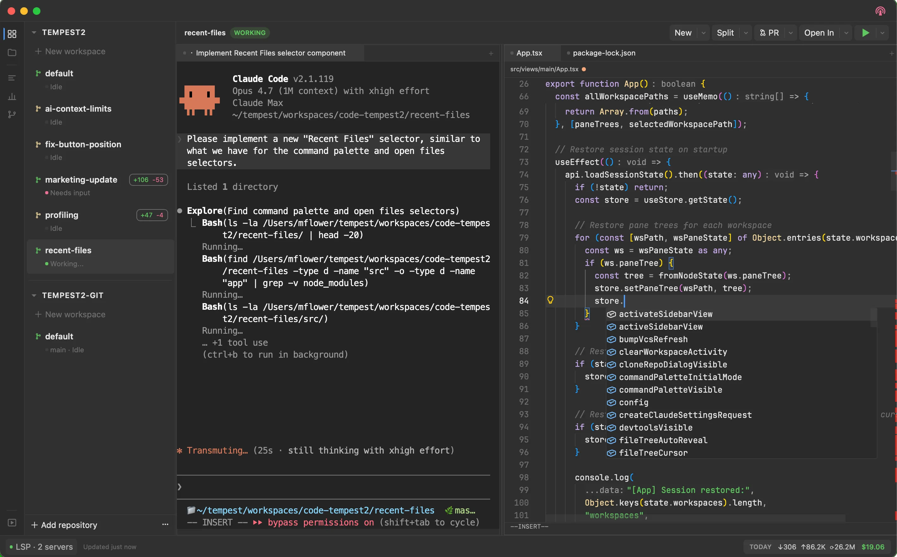
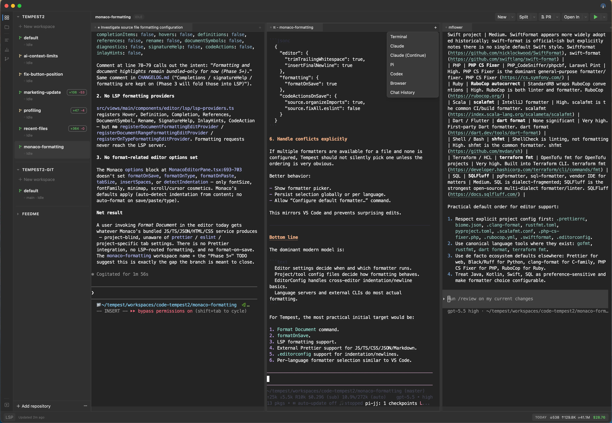
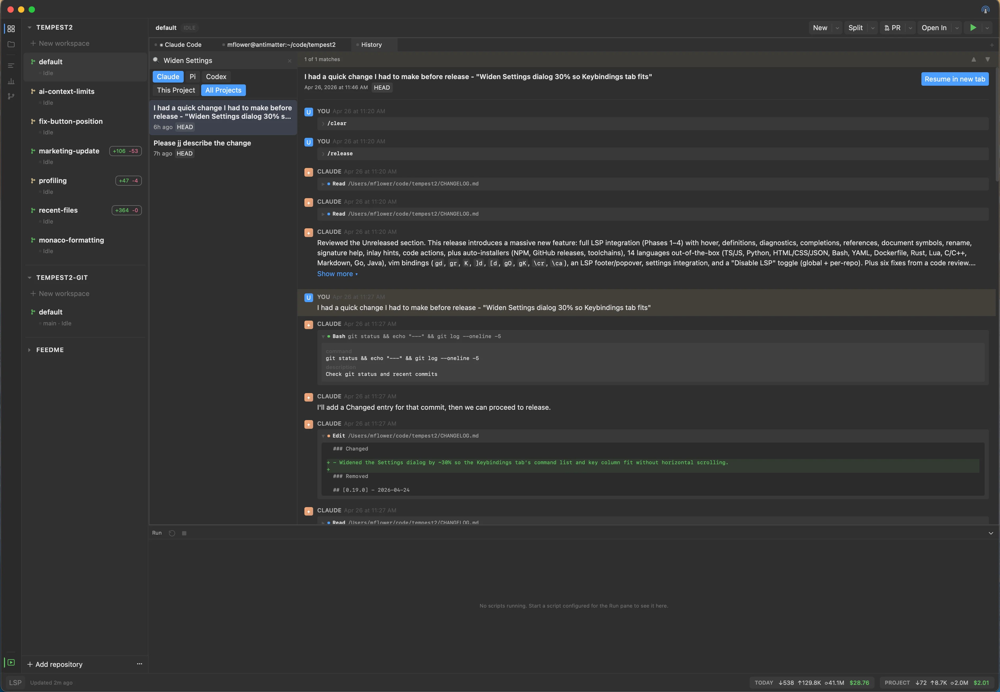
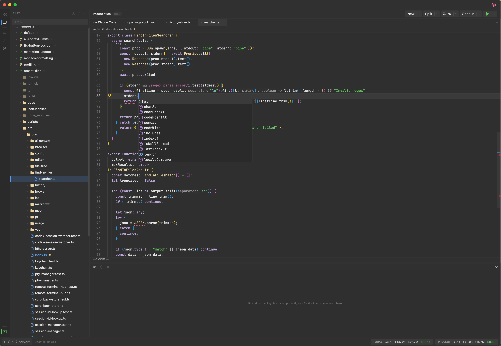
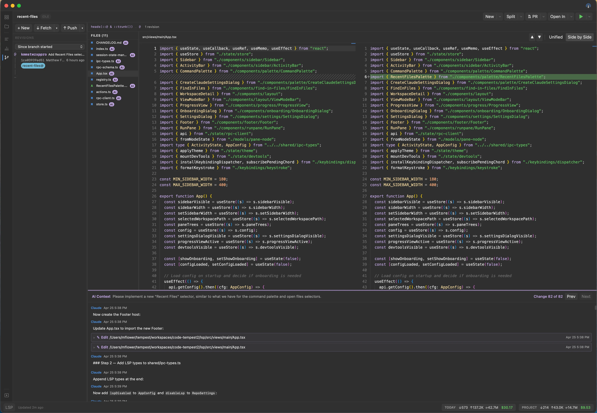
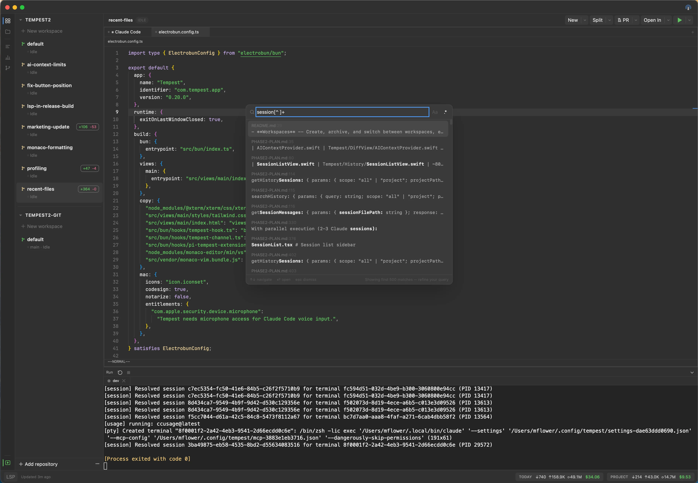
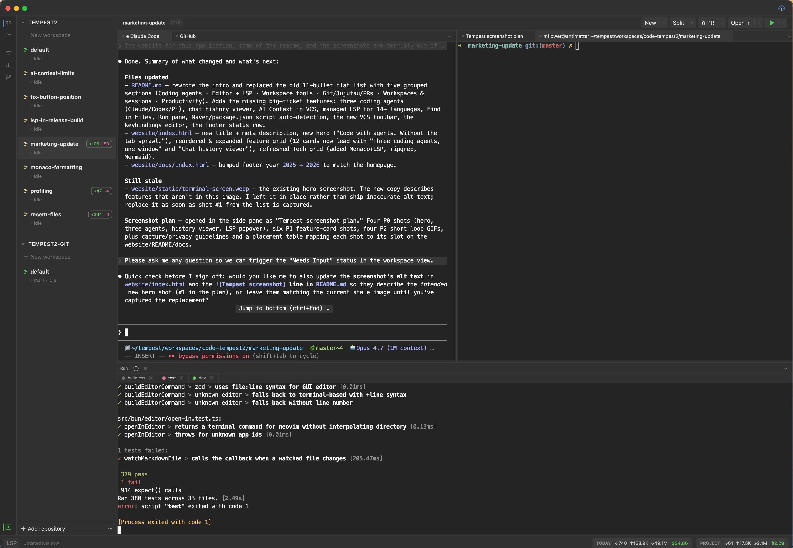
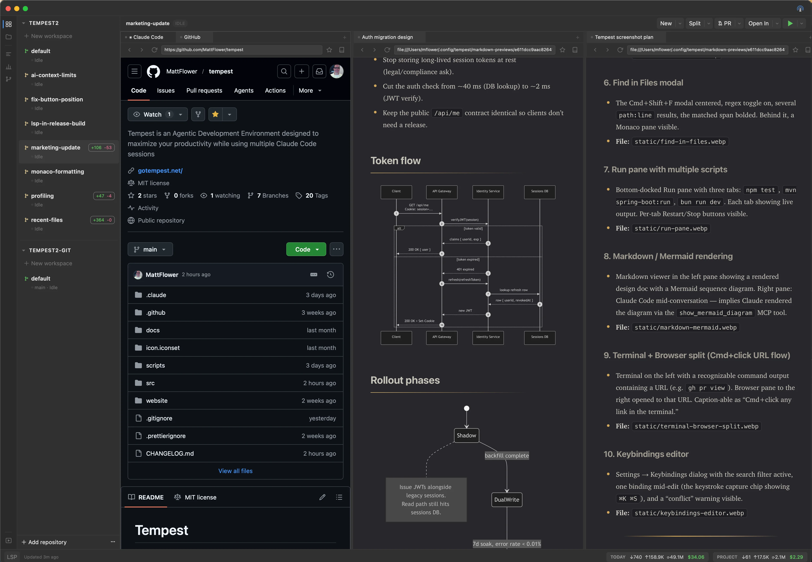
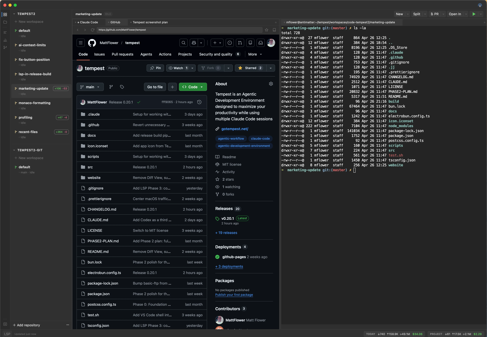
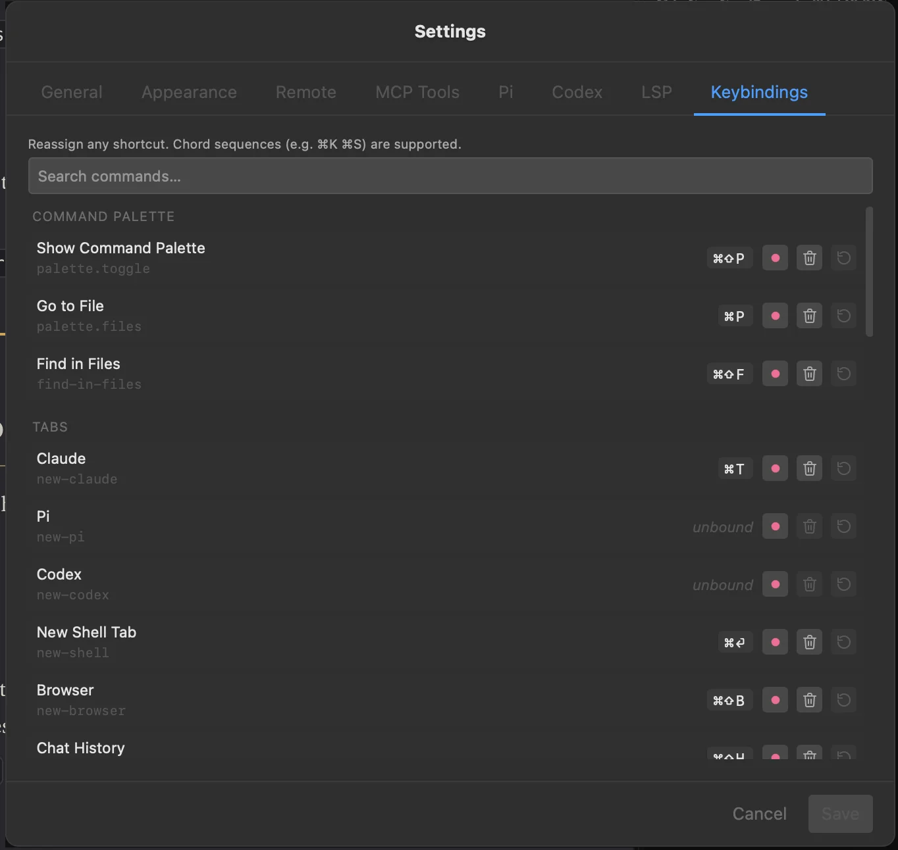

Tempest is a native macOS workspace built for developers working alongside AI coding agents. Claude, Codex, and Pi run as first-class tabs next to your terminal, editor, managed LSP, browser, and Git/Jujutsu tools — all in one fast app.

Features
Tempest brings your AI coding agents, terminal, editor, browser, and version control into a single native workspace — with the integration plumbing already done for you.
Claude Code, OpenAI Codex, and Pi all run as native tabs. Tempest auto-resumes each agent's prior session on restart, and per-workspace dots tell you whether the agent is working, waiting on input, or idle.
List, full-text search, and view past sessions across Claude, Codex, and Pi. "Resume in new tab" relaunches any session in place — no copying conversation IDs around.
xterm.js with WebGL rendering and a real PTY backend via Bun.Terminal. Fast, full color, full Unicode. Cmd+click any URL to open it in a Browser pane next to the terminal.
Monaco with Vim bindings, plus auto-installed language servers for 14+ languages (TypeScript, Python, Rust, Go, C/C++, Java, and more). Hover, definitions, refs, rename, completions, code actions — out of the box.
Tabbed browsing powered by the system WKWebView. Read docs, preview your work, and zoom inside the page without leaving the workspace.
Diff viewer, status, staging, and a full Pull / Push / Merge / Rebase toolbar that works in both Git and Jujutsu repos. AI Context shows which agent edited each file.
Track and review pull requests directly in your workspace. Stay on top of reviews without context-switching to the browser.
One workspace per task — each with its own terminals, browser tabs, agents, and sessions. Create, archive, and switch with full state restore, including terminal scrollback.
Cmd+Shift+F opens a ripgrep-backed search across the workspace, with regex and case toggles. Enter jumps straight to the match in the editor or markdown viewer.
Dockable bottom pane for long-running scripts — auto-detected from package.json and pom.xml, or fully custom. Each script runs in a PTY-backed tab and survives workspace switches.
Live-rendered Markdown with Mermaid diagrams and Cmd+F find-in-page. Tempest's MCP tools also let agents render markdown, mermaid, and full HTML pages directly into a side pane.
Cmd+Shift+P for commands, Cmd+P for files, arrow keys to target left or right pane. Every shortcut is reassignable from Settings, including chord sequences like ⌘K ⌘S.
Optional HTTP server with bearer-token auth, a web dashboard, and a QR code for easy mobile pairing — check status or trigger commands from your phone.
Tour
Highlights from the workspace — agents, LSP, history, version control, search, and more.

Claude, Codex, and Pi as native tabs. Activity dots tell you which agent is working, idle, or waiting for input.

Search every past Claude / Codex / Pi session with ripgrep. "Resume in new tab" relaunches any session in place.

Auto-installed LSP for 14+ languages, with hover, definitions, refs, rename, and code actions. The footer shows live server status.

Pull / Push / Merge / Rebase toolbar over a unified diff view. AI Context shows which agent edited each file.

Cmd+Shift+F opens a ripgrep-backed search with regex and case toggles. Enter jumps straight to the match.

Dockable bottom pane. Each script lives in a PTY-backed tab and survives workspace switches.

Live-rendered Markdown with Mermaid diagrams. Agents can also render visuals into a side pane via Tempest's MCP tools.

Cmd+click any URL in a terminal to open it in a Browser pane next to the shell — no app-switching.

Every shortcut is reassignable, including chord sequences like ⌘K ⌘S. Conflicts are caught before you save.
Under the hood
Two-process architecture: a Bun backend for performance-critical work — PTYs, LSP, file I/O, git, agent hooks — and a React webview for the UI, communicating over a typed RPC bridge.
Electrobun
Native macOS framework
Bun
Fast JavaScript runtime
React 19
UI framework
Tailwind CSS 4
Utility-first styling
xterm.js
Terminal emulation
Monaco + LSP
Editor & language servers
Zustand
State management
WKWebView
Native browser engine
ripgrep
Find in Files / history search
Mermaid
Inline diagram rendering
Follow the project on GitHub or star the repo to stay updated.
View on GitHub